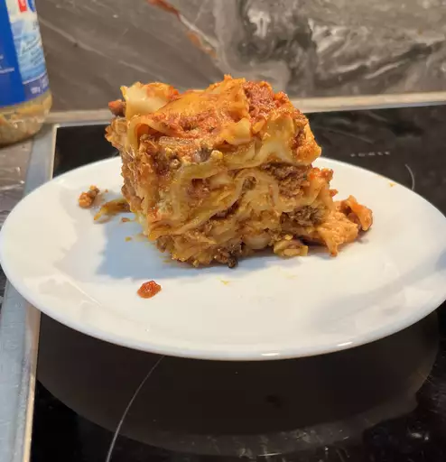

Lasagna
Tasty Looking Lasagna

Slow Cooker Lasagna
This crockpot lasagna recipe is so easy, you might think that you missed
something. It is a delicious slow cooker meal!
Ingredients
- 1 pound lean ground beef
- 1 medium onion, chopped
- 2 teaspoons mince girlic
- 1 can of tomatoe paste
- salt to taste
- Shredded mozzarella cheese
- grated Parmesan cheese
- 1 package lasagna noodles
Directions
- Gather all ingredients
-
Cook ground beef, onion, and garlic in a large skillet over medium heat
until the meat is browned.
-
Add tomato sauce, tomato paste, salt, and oregano and stir until well
combined and heated through.
-
Stir mozzarella, cottage cheese, and Parmesan together in a large bowl.
-
Spoon a layer of the meat mixture onto the bottom of a slow cooker.
-
Add a double layer of uncooked lasagna noodles, breaking noodles to fit
into cooker as needed.
- Top noodles with a portion of cheese mixture.
-
Repeat the layering of sauce, noodles, and cheese until all the
ingredients are used.
-
Cover and cook on Low until lasagna noodles are tender, about 4 to 6
hours.